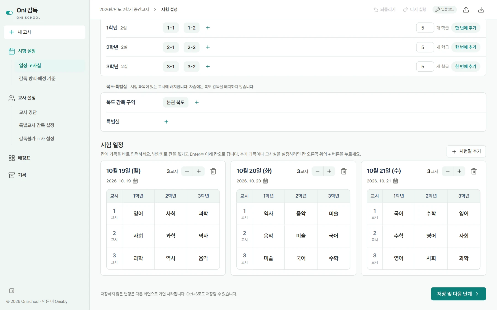
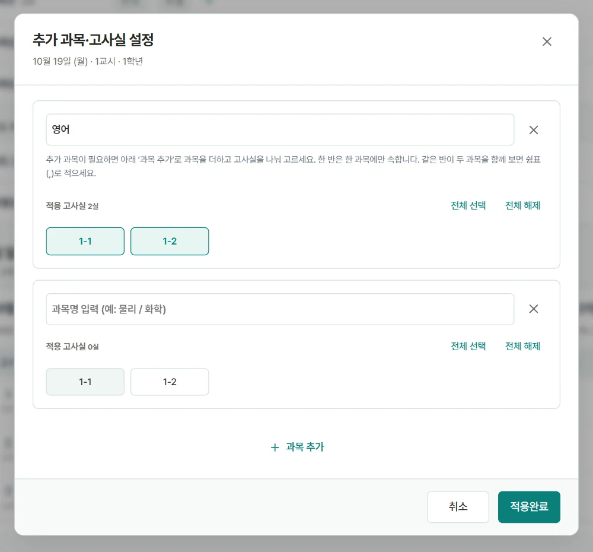

일정·고사실 · Schedule and rooms
시험 설정
- 1Register rooms by gradeAdd classes one at a time or several at once, then corridor zones and special rooms.
- 2Add exam days and periodsEach day is a card with its own number of periods.
- 3Type the subject into each cellArrow keys move between cells and Enter moves down, like a spreadsheet.
- 4Split a cell when classes differOpen the picker to add a second subject and choose which rooms each one applies to. Nothing changes until you confirm.
How seats are made. A corridor seat is created only in periods that have an exam. If every subject in a period is self-study, no corridor seat is made.
